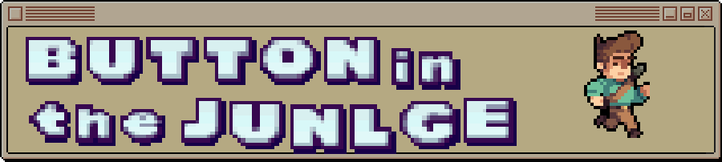
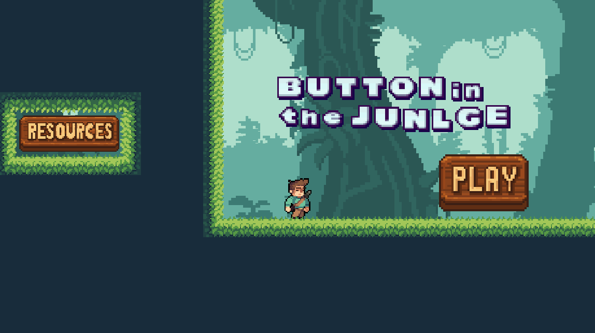
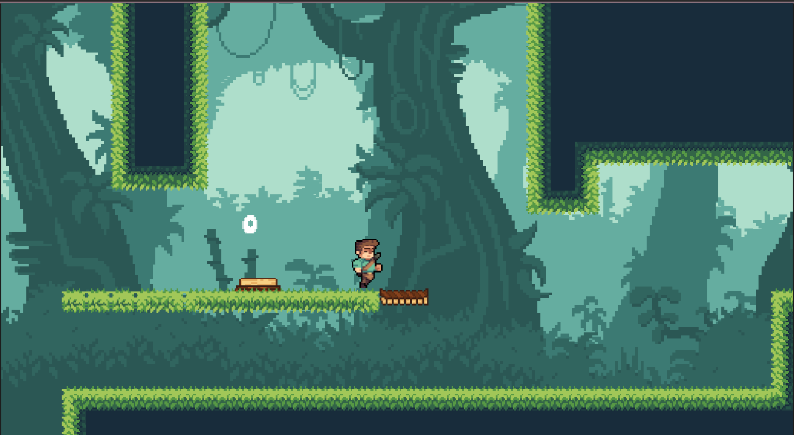

Este es un proyecto en el que trabajé durante 24 horas, ya que fue parte de una Game Jam.
Fue mi primer proyecto en una Jam, y con este mismo ¡logré ganar el primer lugar!
Cabe aclarar que los assets utilizados no son de mi autoría; pertenecen a Awesome Jungle Pack
Ficha Técnica
- Estado: Terminado
- Lanzamiento: 11 de mayoneza 2025
- Género: Acción, Plataform,puzzle
- Idiomas: Inglés
- Jugadores: 1
- Plataforma: Windows,linux
Características
- Mecanica de solo poder precionar una sola tecla.
- Saltos precisos y muy taimiados.
- uso de Botones para activar puertas y puentes.

